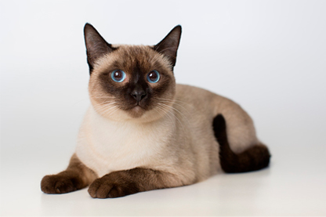
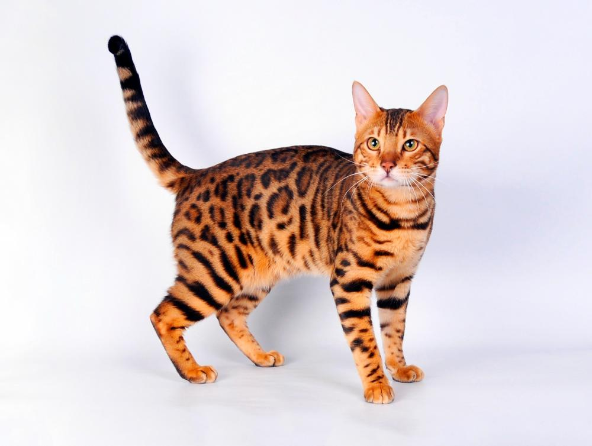

Кошки
Как ухаживать за кошкой
История кошек
Виды кошек
Как ухаживать за кошкой
Как ухаживать за кошкой
- Кормление и вода — давай кошке качественный корм по режиму и обеспечивай доступ к чистой воде
- Гигиена и уход — регулярно вычёсывай шерсть, чисти уши и следи за когтями
- Забота и общение — играй с кошкой, проводи с ней время и регулярно показывай ветеринару
История кошек
История кошек
Кошки были одомашнены около 9 000 лет назад на Ближнем Востоке, где помогали людям защищать зерно от грызунов.
В Древнем Египте их почитали как священных животных.
Со временем кошки распространились по всему миру благодаря торговцам и путешественникам.
Сегодня они стали одними из самых популярных домашних питомцев, сохранив свою независимость и охотничьи инстинкты.
Виды кошек
Виды кошек



 Ссылки на Дополнительная Информация
Ссылки на Дополнительная Информация